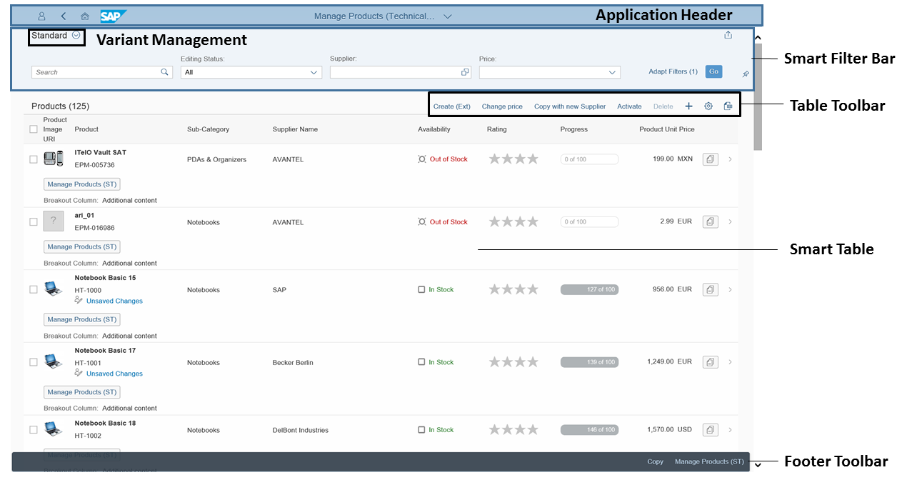

The list report allows the user to work with a large list of items. It combines powerful functions for filtering large lists with different ways of displaying the resulting item list.
Example of a list report:
Application header
Send Email
If users have set Execute on Select for their default variant, the content of the list report is displayed immediately upon launching the app, and the smart filter bar is collapsed.
Smart table
For more information about the various functions of the list report view, see the following information: